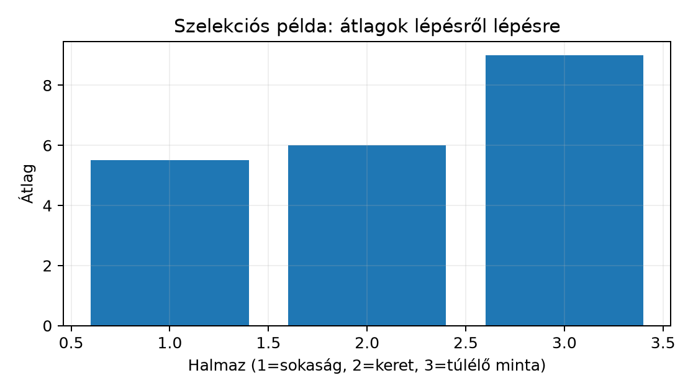

Belépő · szint: közép · idő: 60 perc · eszköz: pandas, matplotlib
Előfeltétel: 12.4. alfejezet · Célkészség: Sokaság, minta és adatfelvételi folyamat · Kimenet: működő kód és a labor ellenőrző tesztje.
A Northstar késési modell rendelésenként becsli a 7 napot meghaladó
kézbesítést. Mielőtt modellt építenénk, tisztázni kell, kik kerültek
egyáltalán a fájlba. A bemenet a mellékelt lab
customers.csv, orders.csv és
order_items.csv állománya; a mai megfigyelési egység a
rendelés, mert a target_late célváltozó rendelésszintű. A
kimenet egy adatkeletkezési lap: megnevezi, milyen lépéseken
keresztül jutott egy sor a orders.csv-be, és felsorol
legalább három populációt, amelyre abból nem általánosíthatunk. Az
ellenőrzési feltétel: minden állításhoz meg kell tudni nevezni a
bekerülési feltételt, és ha az összefügghet a kimenettel, jelölni
kell.
Induló becslésként fogalmazzuk meg a kérdést: vajon a
priority_flag=1 rendelések kosárátlaga egyenlő-e az összes
rendelés átlagával? A válasz előzetesen az, hogy nem tudjuk, és nem is a
konkrét szám a lényeg: a flaggel szűrt halmaz nem véletlen minta, tehát
az átlaga elvileg is eltérhet a sokasági átlagtól. Ezt az alfejezet
végére precízen meg tudjuk indokolni.
A sokaság (population) az az halmaz, amelyről állítani szeretnénk. Jele legyen , elemszáma . A minta (sample) a ténylegesen megfigyelt részhalmaz, elemszáma . A sokasági átlag és a mintaátlag:
A minta nem attól minta, hogy „van valamennyi sorunk”, hanem attól, hogy van egy kiválasztási mechanizmus. A mintavételi keret (sampling frame) az a lista vagy eljárás, amelyből a mintát ténylegesen választjuk; jelöljük -fel. A célpopuláció és a keret különbsége a lefedetlen rész: az egységek elvileg sem kerülhetnek be.
Kis kézi példa. Legyen , a sokasági átlag . Tegyük fel, hogy a keretbe csak a páros számok kerültek be, mert például csak ők regisztráltak: . Ha az egész keretet megfigyeljük, az átlag , nem . Ez nem mintavételi zaj, hanem lefedettségi hiba: a páratlanok soha nem juthattak be.
A fenti lépéssor jól mutatja, miért fontos külön kezelni a sokaságot, a keretet és a mintát. Egy szoftverprojektben a „populáció” gyakran nem tárolt fogalom, hanem döntési kérdés: minden potenciális ügyfél? minden jövőbeli rendelés? minden rendelés egy adott piacon? Amíg ezt nem rögzítjük, a leíró statisztika sem értelmezhető általánosításként.
A szelekciós torzítás (selection bias) akkor lép fel, ha a mintába kerülési valószínűség összefügg a vizsgált változóval. Legyen az egység bekerülési valószínűsége. Ha az egységeket egymástól függetlenül valószínűséggel választjuk, a kiválasztottak átlaga a -vel súlyozott sokasági átlag körül ingadozik:
Ha minden egységre azonos konstans, a kifejezés -t ad. Ha viszont növekszik -vel, a mintaátlag várhatóan felfelé torzít. A pontos elméleti levezetést itt nem végezzük el; a tanulság az, hogy a torzítás iránya a és együttmozgásából adódik. A fenti elemű példában a keretbe kerülés értéke a páratlanokra , a párosakra ; ez a legdurvább szelekció.
A túlélési torzítás (survivorship bias) ennek speciális esete: a megfigyelhető halmaz csak azokat tartalmazza, akik egy folyamatot „túléltek”. Képzeljünk el ezer kosarat, amelyből kétszázból lesz leadott rendelés, és száznyolcvanból lesz sikeres kézbesítés. Ha a cél a kézbesítési idő elemzése, a száznyolcvan megfigyelt sor csak a túlélő rendeléseket tartalmazza; a lemondott, törölt vagy nem leadott rendelések kiestek. Ha a törlés valószínűsége összefügg a sürgősséggel vagy a kosárértékkel, a megfigyelt átlag torzul.
A Northstar orders.csv-ben a kézbesítések a generált
időablak végén teljesen megfigyeltek, tehát a kézbesítési időre nincs
cenzorálás. A túlélési torzítás mégis jelen van egy korábbi szinten: a
fájl csak a leadott rendeléseket tartalmazza. A kosarat elhagyó, a
rendelést lemondó vagy soha be nem jelentkező ügyfél hiányzik. Ezért a
target_late aránya a leadott rendelések sokaságára
vonatkozik, nem a vásárlási szándékú kosarakra.
A két hiba közös vonása, hogy a minta méretének növelése nem szünteti meg. A mintavételi zaj -nel csökken — ezt a Monte Carlo-hibánál láttuk 12.4. alfejezet —, de a szelekciós hiba
nem függ -től, ha a kiválasztási mechanizmus rögzített marad. A nagyobb adathalmaz tehát pontosabban méri ugyanazt a torzított mennyiséget.
A mechanizmust kis szintetikus adaton is lefuttathatjuk. A generáló
seed legyen 20261020, az értékek exponenciális eloszlásból
származzanak; a bekerülési valószínűség növekedjen az értékkel. A
kód:
import numpy as np
rng = np.random.default_rng(20261020)
N = 2000
x = rng.exponential(50.0, size=N) # sokasági értékek
p = 0.1 + 0.8 * (x / x.max()) # értékfüggő bekerülés
in_sample = rng.random(N) < p
sample = x[in_sample]
print(f"n = {in_sample.sum()}")
print(f"sokasági átlag = {x.mean():.2f}")
print(f"mintaátlag = {sample.mean():.2f}")
print(f"bekerülési valószínűség átlaga = {p.mean():.3f}")A kód kimenete a seedtől és a NumPy-verziótól függ, ezért itt nem állítunk be számot; a futás helyben ellenőrizhető. A mechanizmus iránya viszont a képletből is látszik: a kisebb értékek kisebb, a nagyobbak nagyobb valószínűséggel kerülnek be, tehát a mintaátlag várhatóan meghaladja a sokasági átlagot. A numerikus reprodukálhatóságot a seed biztosítja, de a bitazonosságot csak azonos NumPy-verzión várhatjuk.
A kézi kontroll a tíz elemű példa:
| Halmaz | Elemek | Átlag |
|---|---|---|
| Sokaság | 1, 2, 3, 4, 5, 6, 7, 8, 9, 10 | 5,5 |
| Keret | 2, 4, 6, 8, 10 | 6,0 |
| Túlélő minta | 8, 10 | 9,0 |
A keret átlaga azért nagyobb a sokaságinál, mert a páratlanok lemaradtak; a túlélő átlag azért nagyobb a kereténél, mert a folyamat a kisebb értékeket kiejtette. A két eltérés egyike sem a véletlen miatt van.

A szelekciós torzítás akkor mutatható meg tisztán, ha a sokaság összetétele és a csoporton belüli arányok ismertek. Legyen a sokaság 60% A és 40% B, a konverziós arány A-ban 0.10, B-ben 0.30. A valódi összesített arány . Ha a naplózás csak a látogatók 90%-át rögzíti A-ból és 10%-át B-ből, a minta összetétele eltolódik:
| Mennyiség | Érték | Magyarázat |
|---|---|---|
| valódi összesített arány | 0.180 | |
| torzított minta összetétele | 90% A, 10% B | a naplózás hiányos |
| torzított összesített arány | 0.120 | |
| torzítás | −0.060 | a minta alulbecsüli az összesített arányt |
| csoporton belüli különbség | 0.200 | B − A, a torzításban változatlan |
| súlyozott korrekció | 0.180 | ismert sokasági súlyokkal |
A csoporton belüli hatás tehát változatlan, az összesített arány viszont torzított, mert a mintaösszetétel más, mint a sokaságé. A súlyozás csak akkor korrigál, ha a sokasági súlyok ismertek; ha a mintakeretből egy csoport teljesen hiányzik, a súlyozás sem tudja visszahozni.
POPULATION = {"A": 0.60, "B": 0.40}
RATES = {"A": 0.10, "B": 0.30}
biased = {"A": 0.90, "B": 0.10}
true_overall = sum(POPULATION[g] * RATES[g] for g in POPULATION)
biased_overall = sum(biased[g] * RATES[g] for g in biased)
weighted = sum(POPULATION[g] * RATES[g] for g in POPULATION)
assert abs(true_overall - 0.18) < 1e-12
assert abs(biased_overall - 0.12) < 1e-12
assert abs((RATES["B"] - RATES["A"]) - 0.20) < 1e-12
assert abs(weighted - true_overall) < 1e-12A lab/sampling_bias.py overall(),
biased_weights(), weighted_estimate() és
report() függvényei ezt a számítást adják; a
tests/test_sampling_bias.py a valódi 0.18, a torzított
0.12, a 0.20-as csoporthatás és a súlyozott korrekció egyezését
ellenőrzi.
Rajzoljuk fel a Northstar rendelési adat keletkezési láncát a lab szerződése alapján:
signup_date, a
csatorna, a szegmens és a régió.orders.csv-be: order_ts,
promised_days=7, quantity_sum,
item_rows, basket_minor,
shipping_fee_minor, currency,
distance_km, priority_flag.order_items.csv-be kerülnek; a
basket_minor a tételekből számolt kosárösszeg.delivery_days, az actual_delivery_at és a
belőlük képzett target_late.orders.csv az időablak minden szimulált
rendelését tartalmazza; a orders_raw.csv szándékos hibákkal
van ellátva.A betöltés és az ellenőrzés minimális kódja a lab
munkakönyvtárból:
import pandas as pd
customers = pd.read_csv("data/customers.csv")
orders = pd.read_csv("data/orders.csv", parse_dates=["order_ts"])
print("rendelés sorok:", len(orders))
print("order_id egyedi:", orders["order_id"].is_unique)
print("rendelést leadó ügyfelek:", orders["customer_id"].nunique())
print("ügyfelek a törzsben:", len(customers))
orders_region = orders.merge(
customers[["customer_id", "region"]], on="customer_id", how="left"
)
print("merge sorok:", len(orders_region))
print(orders_region["region"].value_counts())Futtassuk a lab projektgyökeréből, ha a kódot például
eda_sampling.py néven mentjük:
uv run python eda_sampling.pyA labor szerződése szerint a tiszta orders.csv
alapmérete 2400 sor, a customers.csv 300 sor. A
merge sorainak száma ezért 2400 marad, feltéve, hogy a
customer_id egyedi a customers táblában; a
how="left" megőrzi a rendelések számát, a hiányzó régió
NaN lenne. A kód kimenetét itt nem futtattuk, ezért a
pontos régióarányokat nem állítjuk mértnek.
A szintetikus példában a mintaátlag eltérése szisztematikus: a nagy minta nem korrigálja, mert a bekerülési valószínűség maga függ a vizsgált értéktől. A tíz elemű kézi példa ugyanezt mutatja -től függetlenül.
A Northstar laborban a régiómegoszlás a rendeléseket jellemzi, nem az ügyfélsokaságot. Ha egy régióban egy ügyfél átlagosan több rendelést ad le, a rendelésszám-súlyozott arány eltér az ügyfélszám-súlyozottól. Ezt a kettőt össze lehet hasonlítani:
customer_region = customers["region"].value_counts()
print("ügyféloldali megoszlás")
print(customer_region)
print("rendelésoldali megoszlás")
print(orders_region["region"].value_counts())Az invariáns: az ügyféloldali value_counts() összege
300, a rendelésoldalié 2400. Ha a két megoszlás eltér, az nem bizonyíték
semmilyen okra — csak azt, hogy a két elemzési szemcsézettség mást mér.
A későbbi resamplingnál ezért lesz fontos az ügyfél mint független
mintavételi egység, nem a rendelés.
A rendelés- és az ügyfélszintű populációt elkülönítő kijelentésekhez mindig jelöljük a mintavételi keretet és a bekerülés mechanizmusát. A szintetikus populációra igaz leíró állítás nem vihető át automatikusan valódi webshop ügyfeleire.
orders.csv
alapján döntést kell hozni arról, mekkora lesz a késés aránya a jövőbeli
rendeléseken. Nevezz meg három populációt, amelyre ebből az
adathalmazból nem általánosíthatunk, és mindegyikhez nevezd meg a
bekerülési hézagot.region_counts sorozatot CSV-be menti, és
assert utasításokkal ellenőrzi a 2400-as sorösszeget,
valamint azt, hogy nincs hiányzó régió. Az output mappát hozd létre, ha
nem létezik.priority_flag=1 rendelések 42%-os
megfigyelt aránya a Northstar teljes rendelési sokaságára igaz.” Mi a
hiba az állításban? Milyen feltétel mellett lenne védhető az
általánosítás?region="west"
csatornát. Használhatjuk-e a meglévő north,
central, south rendelésekből becsült késési
arányt a west rendelésekre? Fogalmazd meg, milyen
adatfelvételi feltételt kellene ellenőrizni, és mi a legkisebb további
adatgyűjtés, amelyet javasolnál.orders csak a leadott rendeléseket tartalmazza; a
kosárelhagyók kiestek, ez túlélési torzítás. A késési arány a leadott
rendelésekre vonatkozik, nem a vásárlási szándékra.west
régióbeli rendelések bekerülési folyamata eltérhet, az azonos eloszlás
feltétele nem teljesül automatikusan.from pathlib import Path
import pandas as pd
customers = pd.read_csv("data/customers.csv")
orders = pd.read_csv("data/orders.csv", parse_dates=["order_ts"])
orders_region = orders.merge(
customers[["customer_id", "region"]], on="customer_id", how="left"
)
assert len(orders_region) == 2400
assert orders_region["region"].notna().all()
region_counts = orders_region["region"].value_counts().sort_index()
assert region_counts.sum() == 2400
Path("output").mkdir(exist_ok=True)
region_counts.rename("rendelesek").to_csv("output/region_counts.csv")
print(region_counts)Az ellenőrző invariant a 2400-as összeg; ha a merge
véletlenül duplikálna, az assert elszállna. A hiányzó régió
szintén hiba lenne, mert a tiszta orders.csv minden
customer_id-ja létezik a customers-ben.
A kolléga hibája az, hogy a megfigyelt arányt azonosítja a
sokasági aránnyal. A priority_flag=1 alminta nem véletlen
minta; a flag maga is döntés eredménye, és ha a döntés összefügg a
késéssel vagy a kosárértékkel, az arány torzul. Az általánosítás akkor
lenne védhető, ha a mintába kerülési mechanizmus ismert, véletlen és
független a célváltozótól, vagy ha randomizált kísérletből származna az
adat. A 2400-as méret a mintavételi zajt csökkenti, de a szelekciós
hézagot nem.
A west rendelésekre nem általánosíthatunk
automatikusan. A meglévő három régió a mintavételi keret részét képezi;
a west ügyfelek a kereten kívül esnek. Ellenőrizni kellene,
hogy az új régióban azonos-e a rendelésfeladás folyamata, a szállítási
hálózat és az ügyfélösszetétel. A minimális további adatgyűjtés egy
rövid, explicit protokoll szerinti megfigyelési időszak a
west régióban, vagy ha a kérdés oksági, randomizált
kísérlet. Amíg nincs ilyen adat, a becslés csak feltételes extrapoláció,
amelynek érvényességi korlátját rögzíteni kell.
A leggyakoribb tévedés: a nagy adathalmaz automatikusan reprezentatív minta. A Northstar 2400 rendelése nagyobb, mint a 300 ügyfél, de ha mind a 300 ügyfél ugyanabból a három régióból, ugyanazokon a csatornákon keresztül érkezett, a külső általánosítás nem javul a sorok számától. A mintavételi zaj -nel csökken, de a szelekciós hiba konstans marad. A „több adat” tehát pontosabb torzított becslést adhat.
Önellenőrzés minden adathalmaz előtt: (1) Mely egységek nem szerepelhetnek a fájlban elvileg sem? (2) A bekerülési feltétel mérhető-e a fájlban? (3) Ugyanaz-e a megfigyelési egység a döntési kérdésben és a számolásban? Az 1.1. alfejezetben tanult arány nevezője itt tér vissza: ha a nevező nem a teljes sokaság, az arány sem arról szól.
A minta akkor általánosítható a sokaságra, ha ismerjük a kiválasztási mechanizmust; a mintavételi keret határozza meg, kik kerülhetnek be egyáltalán. A szelekciós torzítás akkor lép fel, ha a bekerülési valószínűség összefügg a vizsgált változóval, a túlélési torzítás pedig akkor, ha csak a folyamatot túlélő egységeket figyeljük meg. A nagy mintaméret a zajt csökkenti, nem a szisztematikus hézagot. A Northstar rendelési adat a leadott rendelések 180 napos ablakát fedi le; nem általánosítható automatikusan a nem regisztráltakra, a kosárelhagyókra vagy más időszakokra és régiókra. A következő alfejezetben ebből a mintából számítunk összegző statisztikát, és megvizsgáljuk, mit árul el a minta a saját eloszlásáról.